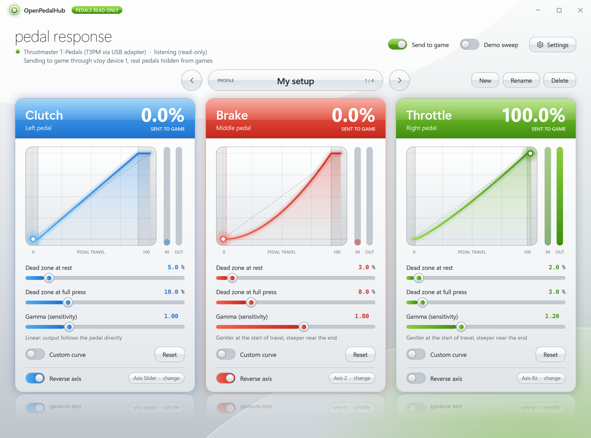
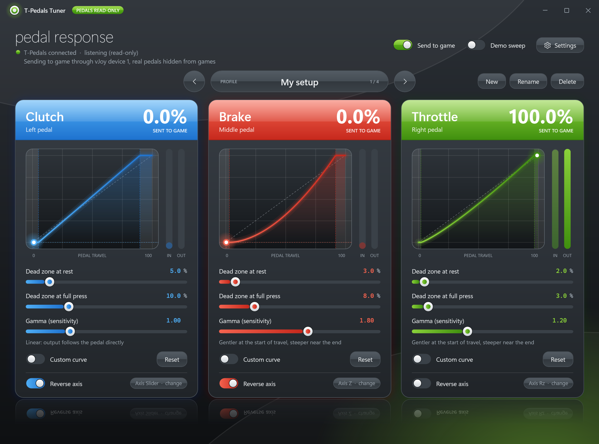
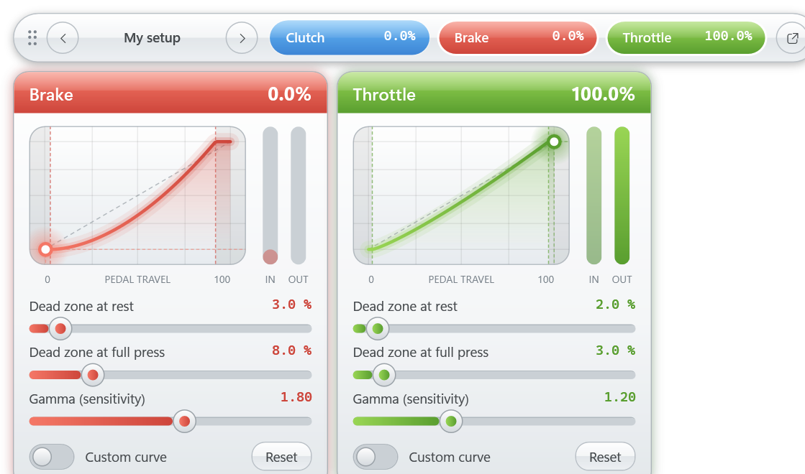

Dead zones
Trim the slack at rest and at full press, to a tenth of a percent. No more resting foot on the brake.
Dead zones, gamma and custom curves for sim-racing pedals whose own software can't do it. Community-driven, and it only ever listens to your pedals.
Each pedal gets its own curve, and changes apply the moment you make them.
Trim the slack at rest and at full press, to a tenth of a percent. No more resting foot on the brake.
Set sensitivity to 0.01, or drag up to eight points on the graph to shape the response exactly.
Measures where each pedal really rests and bottoms out, so 0 % and 100 % mean what they should.
Save a setup per game or car and flick between them with a sliding selector.
A slim always-on-top bar with a tab per pedal. Tune on track without leaving the game.
See pedal travel and the value sent to the game, side by side, as you press.



With HidHide installed, the real pedals are hidden from games while OpenPedalHub is open, so the game sees one set instead of two. They come back the moment the app closes.
| You need | Why |
|---|---|
| Windows 10 or 11, 64-bit | |
| .NET 9 Desktop Runtime | Runs the app |
| vJoy | The virtual controller your game reads |
| HidHide optional | Hides the real pedals from the game |
| Pedal set | Status |
|---|---|
| Thrustmaster T-Pedals (T3PM via USB adapter) | Tested |
| Anything else that shows up as a game controller | Teach it in a minute |
Choose Settings → Set up a pedal set and press each pedal when asked. The set works on your PC straight away.
The app also saves a small report file. Share it in an issue and the set gets added for everyone. Reports hold hardware model details only: no serial numbers, user names or file paths.
OpenPedalHub started with one pedal set whose vendor software had no dead-zone or gamma controls. The aim now is a free, community-driven home for pedal tuning: one app that works across brands, improved by the people who use it.
The code is open under the GNU GPL v3. Bug reports, pedal-set reports and pull requests are all welcome.
| Known limits | |
|---|---|
| Exclusive fullscreen | Hides the overlay. Use borderless or windowed. |
| Pedals plugged into a wheel base | Work, but can't be hidden, so the game sees both sets. |
| Combined throttle and brake axis | Not supported. |